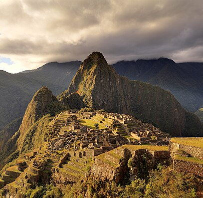
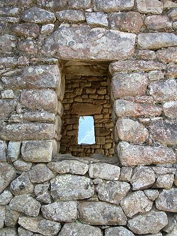
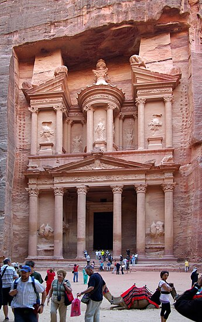
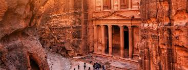
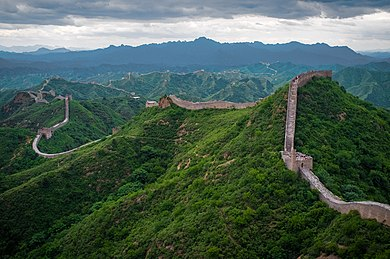
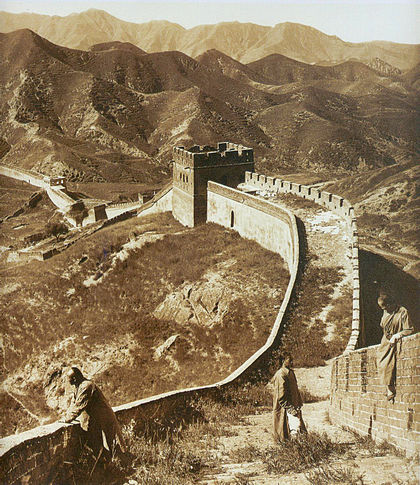

Machu Picchu (Peru)
Machu Picchu bugüne kadar çok iyi korunarak gelmiş olan bir İnka antik şehridir.7 Temmuz 2007 tarihinde Dünyanın Yeni Yedi Harikası'ndan biri olarak seçilmiştir.And Dağları'nın bir dağının zirvesinde, 2.430 m yükseklikte, Urubamba Vadisi üzerinde kurulmuş olup Peru'nun Cusco şehrine 88 km mesafededir. Şehir, İnkalı bir hükümdar olan Pachacutec Yupanqui tarafından 1450 yılları civarında inşa ettirilmiştir. İspanyol istilacılar 1532 yılında buraları işgal ederken sık dağlar arasında kalmış bu şehir, istilacılar tarafından fark edilmemiş ve bu sayede zarar görmemiştir. Şehrin inşaası tamamlandıktan kısa süre sonra yayılan çiçek hastalığı salgını nedeniyle şehir terkedilmek zorunda kalınmıştır. Machu Picchu 200'den fazla merdiven sistemiyle birbirine bağlı olan taş yapılardan oluşur. Şehrin 3000 basamağı bugün hâlâ gayet iyi durumdadır. Şehrin inşaasında kullanılan özel taşların vadiden raylı halat sistemiyle zirveye taşındığı düşünülüyor. Ayrıca hemen yanında Huayna Picchu isminde 2720 metre yüksekliğinde bir dağ bulunur. Bu dağa giden patika yol Machu Picchu'dan bakılınca görünmeyen gizli bir geçit şeklindedir ve tırmanış yaklaşık 2 saat sürer. Huayna Picchu'nun zirvesinden tüm Machu Picchu şehrini ve çevreyi 360 derece gözlemlemek mümkündür.
Şehirde içinde 100'den fazla insan iskeletinin bulunduğu 50 adetin üzerinde mezar keşfedilmiştir (ilk başlarda bunların %80'inin kadın olduğu sanılmış, ama sonraki incelemelerde eşit dağılım olduğu tespit edilmiştir). Bu keşfe istinaden şehrin, İnkalar'ın yetiştirme ve disiplin yeri olduğu teorisi geliştirilmiş. Ancak zamanımızda bu teori geçerliliğini yitirmiş durumdadır. Bugün daha çok kabul gören teori, şehrin 700'den fazla İnka asil ve din adamına ev sahipliği yapmış olduğudur.1912 ve 1913 yıllarında Bingham, şehri ortaya çıkarmaya başladı. 1915'te Machu Picchu araştırmalarıyla ilgili bir kitap yayınladı. National Geographic Society'nin Nisan 1913 sayısını Machu Picchu şehrine ithaf etmesiyle meşhur oldu.
Petra (Ürdün)
MÖ 400 ile MS 106 yılları arasında Nebatiler'e başkentlik yapmıştır. Roma İmparatorluğu tarafından işgal edilene kadar başkent olarak varlığını sürdürmüştür. 400'lü yıllardan sonra deprem ve ekonomik sıkıntılardan dolayı kent gözden düşmüş ve zaman içinde unutulmuştur. Petra'nın yapım amacı tarihçiler tarafından bulunamamıştı. Ancak yapılan son araştırmalarda Petra'daki El-Hazne'nin altında gizli gömülü bir bölüm olduğu ve bu bölümün kral mezarları olduğu araştırmalar sonucunda kesinleşmiştir.
Petra antik kentinde tiyatro, tapınak, ev gibi yapılar kireç taşına oyularak yapılmıştır. El-Hazne ve Roma döneminde yapılan amfitiyatro en bilinen yapılardır.Kum taşından oluşan kaya bloklarına oyulmuş tapınaklar, amfi tiyatro, mezarlar ve rölyeflerden oluşan yapı, yaklaşık 100 kilometre kare alana yayılmaktadır
Büyük Çin Seddi (Çin)
Çin Seddi, Çin'in kuzeybatısı boyunca uzanan, dünyanın en uzun savunma duvarıdır. Kalıntıları Po Hay Körfezi'nde deniz kıyısında başlar. Pekin'in kuzeyinden geçerek batıya yönelir ve Huang-Ho Nehri'ni ikiye bölerek güneybatıya uzanır. Gobi Çölü'nün güneyinden batıya yönelerek devam eder.Son yıllarda yapılan arkeolojik araştırmaya göre Çin Seddi, tüm kollarıyla birlikte toplam 21.196 km uzunluğa sahiptir.Seddin Ming Hanedanlığı döneminde yıkılmış olan kısımlarıyla birlikte yapılmış duvar uzunluğu 8.851,8 kilometredir. Bugün ayakta duran kısım Ming Hanedanı devrinden kalan 2.500 kilometrelik duvar bölümüdür.
Seddin kalınlık ve yüksekliği yer yer değişir. Sanılanın aksine Çin Seddi'nin tamamı tuğlalardan oluşmaz. Bazı yerleri çok zayıf, kuvvetsiz maddelerden yapılmıştır ve bu duvarlar çok kısadır.Bu zayıf duvarların amacı devleti saldırılardan korumak değil, düşmanı yavaşlatmaktır.Genellikle duvarın yüksekliği 4-6 metre, taban kalınlığı 7 metre ve üst kalınlığı ise 6 metre civarındadır. Kalın olan yerlerin üzerinde atlar ve arabalar gidebilmektedir. Kalın duvarlar boyunca siperlik ve okçu delikleri vardır. 200 metrede bir gözetleme kulesi veya kale ve 9 kilometrede bir fener kulesi bulunur. Duvar üzerinde yer yer saray ve tapınaklara da rastlanır. Bazı yerlerde setler, kademeli savunmaya olanak verecek şekilde birkaç sıra halinde yapılmıştır.